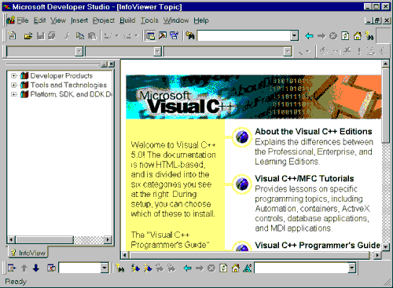

Introduction to MFC
Programming with Visual C++ Version 6.x
by Marshall Brain
Introduction
to MFC
Visual C++
is much more than a compiler. It is a complete application development
environment that, when used as intended, lets you fully exploit
the object oriented nature of C++ to create professional Windows
applications. In order to take advantage of these features, you
need to understand the C++ programming language. If you have never
used C++, please turn to the C++ tutorials in the C/C++
Tutorials page for an introduction. You must then understand
the Microsoft Foundation Class (MFC) hierarchy. This class hierarchy
encapsulates the user interface portion of the Windows API, and
makes it significantly easier to create Windows applications in
an object oriented way. This hierarchy is available for and compatible
with all versions of Windows. The code you create in MFC is extremely
portable.
These tutorials introduce the fundamental concepts and vocabulary behind MFC and event driven programming. In this tutorial you will enter, compile, and run a simple MFC program using Visual C++. Tutotial 2 provides a detailed explanation of the code used in Tutorial 1. Tutorial 3 discusses MFC controls and their customization. Tutorial 4 covers message maps, which let you handle events in MFC.
Let's say you want to create a Windows application. You might, for example, need to create a specialized text or drawing editor, or a program that finds files on a large hard disk, or an application that lets a user visualize the interrelationships in a big data set. Where do you begin?
A good starting place is the design of the user interface. First, decide what the user should be able to do with the program and then pick a set of user interface objects accordingly. The Windows user interface has a number of standard controls, such as buttons, menus, scroll bars, and lists, that are already familiar to Windows users. With this in mind, the programmer must choose a set of controls and decide how they should be arranged on screen. A time-honored procedure is to make a rough sketch of the proposed user interface (by tradition on a napkin or the back of an envelope) and play with the elements until they feel right. For small projects, or for the early prototyping phase of a larger project, this is sufficient.
The next step is to implement the code. When creating a program for any Windows platform, the programmer has two choices: C or C++. With C, the programmer codes at the level of the Windows Application Program Interface (API). This interface consists of a collection of hundreds of C functions described in the Window's API Reference books. For Window's NT, the API is typically referred to as the "Win32 API," to distinguish it from the original 16-bit API of lower-level Windows products like Windows 3.1.
Microsoft also provides a C++ library that sits on top of any of the Windows APIs and makes the programmer's job easier. Called the Microsoft Foundation Class library (MFC), this library's primary advantage is efficiency. It greatly reduces the amount of code that must be written to create a Windows program. It also provides all the advantages normally found in C++ programming, such as inheritance and encapsulation. MFC is portable, so that, for example, code created under Windows 3.1 can move to Windows NT or Windows 95 very easily. MFC is therefore the preferred method for developing Windows applications and will be used throughout these tutorials.
When you use MFC, you write code that creates the necessary user interface controls and customizes their appearance. You also write code that responds when the user manipulates these controls. For example, if the user clicks a button, you want to have code in place that responds appropriately. It is this sort of event-handling code that will form the bulk of any application. Once the application responds correctly to all of the available controls, it is finished.
You can see from this discussion that the creation of a Windows program is a straightforward process when using MFC. The goal of these tutorials is to fill in the details and to show the techniques you can use to create professional applications as quickly as possible. The Visual C++ application development environment is specifically tuned to MFC, so by learning MFC and Visual C++ together you can significantly increase your power as an application developer.
The vocabulary used to talk about user interface features and software development in Windows is basic but unique. Here we review a few definitions to make discussion easier for those who are new to the environment.
Windows applications use several standard user controls:
You can create these controls either in code or through a "resource editor" that can create dialogs and the controls inside of them. In this set of tutorials we will examine how to create them in code. See the tutorials on the AppWizard and ClassWizard on the MFC Tutorials page for an introduction to the resource editor for dialogs.
Windows supports several types of application windows. A typical application will live inside a "frame window". A frame window is a fully featured main window that the user can re-size, minimize, maximize to fill the screen, and so on. Windows also supports two types of dialog boxes: modal and modeless. A modal dialog box, once on the screen, blocks input to the rest of the application until it is answered. A modeless dialog box can appear at the same time as the application and seems to "float above" it to keep from being overlaid.
Most simple Windows applications use a Single Document Interface, or SDI, frame. The Clock, PIF editor, and Notepad are examples of SDI applications. Windows also provides an organizing scheme called the Multiple Document Interface, or MDI for more complicated applications. The MDI system allows the user to view multiple documents at the same time within a single instance of an application. For example, a text editor might allow the user to open multiple files simultaneously. When implemented with MDI, the application presents a large application window that can hold multiple sub-windows, each containing a document. The single main menu is held by the main application window and it applies to the top-most window held within the MDI frame. Individual windows can be iconified or expanded as desired within the MDI frame, or the entire MDI frame can be minimized into a single icon on the desktop. The MDI interface gives the impression of a second desktop out on the desktop, and it goes a long way towards organizing and removing window clutter.
Each application that you create will use its own unique set of controls, its own menu structure, and its own dialog boxes. A great deal of the effort that goes into creating any good application interface lies in the choice and organization of these interface objects. Visual C++, along with its resource editors, makes the creation and customization of these interface objects extremely easy.
All window-based GUIs contain the same basic elements and all operate in the same way. On screen the user sees a group of windows, each of which contains controls, icons, objects and such that are manipulated with the mouse or the keyboard. The interface objects seen by the user are the same from system to system: push buttons, scroll bars, icons, dialog boxes, pull down menus, etc. These interface objects all work the same way, although some have minor differences in their "look and feel." For example, scroll bars look slightly different as you move from Windows to the Mac to Motif, but they all do the same thing.
From a programmer's standpoint, the systems are all similar in concept, although they differ radically in their specifics. To create a GUI program, the programmer first puts all of the needed user interface controls into a window. For example, if the programmer is trying to create a simple program such as a Fahrenheit to Celsius converter, then the programmer selects user interface objects appropriate to the task and displays them on screen. In this example, the programmer might let the user enter a temperature in an editable text area, display the converted temperature in another un-editable text area, and let the user exit the program by clicking on a push-button labeled "quit".
As the user manipulates the application's controls, the program must respond appropriately. The responses are determined by the user's actions on the different controls using the mouse and the keyboard. Each user interface object on the screen will respond to events differently. For example, if the user clicks the Quit button, the button must update the screen appropriately, highlighting itself as necessary. Then the program must respond by quitting. Normally the button manages its appearance itself, and the program in some way receives a message from the button that says, "The quit button was pressed. Do something about it." The program responds by exiting.
Windows follows this same general pattern. In a typical application you will create a main window and place inside it different user interface controls. These controls are often referred to as child windows-each control is like a smaller and more specialized sub-window inside the main application window. As the application programmer, you manipulate the controls by sending messages via function calls, and they respond to user actions by sending messages back to your code.
If you have never done any "event-driven" programming, then all of this may seem foreign to you. However, the event-driven style of programming is easy to understand. The exact details depend on the system and the level at which you are interfacing with it, but the basic concepts are similar. In an event-driven interface, the application paints several (or many) user interface objects such as buttons, text areas, and menus onto the screen. Now the application waits-typically in a piece of code called an event loop-for the user to do something. The user can do anything to any of the objects on screen using either the mouse or the keyboard. The user might click one of the buttons, for example. The mouse click is called an event. Event driven systems define events for user actions such as mouse clicks and keystrokes, as well as for system activities such as screen updating.
At the lowest level of abstraction, you have to respond to each event in a fair amount of detail. This is the case when you are writing normal C code directly to the API. In such a scenario, you receive the mouse-click event in some sort of structure. Code in your event loop looks at different fields in the structure, determines which user interface object was affected, perhaps highlights the object in some way to give the user visual feedback, and then performs the appropriate action for that object and event. When there are many objects on the screen the application becomes very large. It can take quite a bit of code simply to figure out which object was clicked and what to do about it.
Fortunately, you can work at a much higher level of abstraction. In MFC, almost all these low-level implementation details are handled for you. If you want to place a user interface object on the screen, you create it with two lines of code. If the user clicks on a button, the button does everything needed to update its appearance on the screen and then calls a pre-arranged function in your program. This function contains the code that implements the appropriate action for the button. MFC handles all the details for you: You create the button and tell it about a specific handler function, and it calls your function when the user presses it. Tutorial 4 shows you how to handle events using message maps
One of the best ways to begin understanding the structure and style of a typical MFC program is to enter, compile, and run a small example. The listing below contains a simple "hello world" program. If this is the first time you've seen this sort of program, it probably will not make a lot of sense initially. Don't worry about that. We will examine the code in detail in the next tutorial. For now, the goal is to use the Visual C++ environment to create, compile and execute this simple program.
//hello.cpp
#include <afxwin.h>
// Declare the application class
class CHelloApp : public CWinApp
{
public:
virtual BOOL InitInstance();
};
// Create an instance of the application class
CHelloApp HelloApp;
// Declare the main window class
class CHelloWindow : public CFrameWnd
{
CStatic* cs;
public:
CHelloWindow();
};
// The InitInstance function is called each
// time the application first executes.
BOOL CHelloApp::InitInstance()
{
m_pMainWnd = new CHelloWindow();
m_pMainWnd->ShowWindow(m_nCmdShow);
m_pMainWnd->UpdateWindow();
return TRUE;
}
// The constructor for the window class
CHelloWindow::CHelloWindow()
{
// Create the window itself
Create(NULL,
"Hello World!",
WS_OVERLAPPEDWINDOW,
CRect(0,0,200,200));
// Create a static label
cs = new CStatic();
cs->Create("hello world",
WS_CHILD|WS_VISIBLE|SS_CENTER,
CRect(50,80,150,150),
this);
}
This small program does three things. First, it creates an "application object." Every MFC program you write will have a single application object that handles the initialization details of MFC and Windows. Next, the application creates a single window on the screen to act as the main application window. Finally, inside that window the application creates a single static text label containing the words "hello world". We will look at this program in detail in the next tutorial to gain a complete understanding of its structure.
The steps necessary to enter and compile this program are straightforward. If you have not yet installed Visual C++ on your machine, do so now. You will have the option of creating standard and custom installations. For the purposes of these tutorials a standard installation is suitable and after answering two or three simple questions the rest of the installation is quick and painless.
The compilation instructions supplied here apply specifically to Visual C++ version 6.x under Windows NT or Windows 95. If you are using Visual C++ version 1.5, 2.x, 4.x or 5.x then you will want to see the tutorials for these versions on the MFC Tutorials page.
Start VC++ by double clicking on its icon in the Visual C++ group of the Program Manager. If you have just installed the product, you will see an empty window with a menu bar. If VC++ has been used before on this machine, it is possible for it to come up in several different states because VC++ remembers and automatically reopens the project and files in use the last time it exited. What we want right now is a state where it has no project or code loaded. If the program starts with a dialog that says it was unable to find a certain file, clear the dialog by clicking the "No" button. Go to the Window menu and select the Close All option if it is available. Go to the File menu and select the Close option if it is available to close any remaining windows. Now you are at the proper starting point. If you have just installed the package, you will see a window that looks something like this:

This screen can be rather intimidating the
first time you see it. To eliminate some of the intimidation,
click on the lower of the two "x" buttons ( ) that you see in the upper right hand corner of
the screen if it is available. This action will let you close
the "InfoViewer Topic" window. If you want to get rid
of the InfoViewer toolbar as well, you can drag it so it docks
somewhere along the side of the window, or close it and later
get it back by choosing the Customize option in the Tools
menu.
) that you see in the upper right hand corner of
the screen if it is available. This action will let you close
the "InfoViewer Topic" window. If you want to get rid
of the InfoViewer toolbar as well, you can drag it so it docks
somewhere along the side of the window, or close it and later
get it back by choosing the Customize option in the Tools
menu.
What you see now is "normal". Along the top is the menu bar and several toolbars. Along the left side are all of the topics available from the on-line book collection (you might want to explore by double clicking on several of the items you see there - the collection of information found in the on-line books is gigantic). Along the bottom is a status window where various messages will be displayed.
Now what? What you would like to do is type in the above program, compile it and run it. Before you start, switch to the File Manager (or the MS-DOS prompt) and make sure your drive has at least five megabytes of free space available. Then take the following steps.
In order to compile any code in Visual C++, you have to create a project. With a very small program like this the project seems like overkill, but in any real program the project concept is quite useful. A project holds three different types of information:
If you are familiar with makefiles, then it is easy to think of a project as a machine-generated makefile that has a very easy-to-understand user interface to manipulate it. For now we will create a very simple project file and use it to compile HELLO.CPP.
To create a new project for HELLO.CPP, choose the New option in the File menu. Under the Projects tab, highlight Win32 Application. In the Location field type an appropriate path name or click the Browse button. Type the word "hello" in for the project name, and you will see that word echoed in the Location field as well. Click the OK button. In the next window, use the default selection "An empty project", click "Finish", then click "OK" once more in the next window. Notice there is an option for the typical "Hello World" application, however it skips a few important steps you are about to take. Visual C++ will create a new subdirectory named HELLO and place the project files named HELLO.OPT, HELLO.NCB, HELLO.DSP, and HELLO.DSW in that directory. If you quit and later want to reopen the project, double-click on HELLO.DSW.
The area along the left side of the screen will now change so that three tabs are available. The InfoView tab is still there, but there is now also a ClassView and a FileView tab. The ClassView tab will show you a list of all of the classes in your application and the FileView tab gives you a list of all of the files in the project.
Now it is time to type in the code for the program. In the File menu select the New option to create a new editor window. In the dialog that appears, make sure the Files tab is active and request a "C++ Source File". Make sure the "Add to Project" option is checked for Project "hello", and enter "hello" for "File name". Visual C++ comes with its own intelligent C++ editor, and you will use it to enter the program shown above. Type (copy/paste) the code in the listing into the editor window. You will find that the editor automatically colors different pieces of text such as comments, key words, string literals, and so on. If you want to change the colors or turn the coloring off, go to the Options option in the Tools menu, choose the Format tab and select the Source Windows option from the left hand list. If there is some aspect of the editor that displeases you, you may be able to change it using the Editor tab of the Options dialog.
After you have finished entering the code, save the file by selecting the Save option in the File menu. Save it to a file named HELLO.CPP in the new directory Visual C++ created.
In the area on the left side of the screen, click the FileView tab and expand the tree on the icon labeled "hello files", then expand the tree on the folder icon labeled "Source Files". You will see the file named HELLO.CPP. Click on the ClassView tab and expand the "hello classes" tree and you will see the classes in the application. You can remove a file from a project at any time by going to the FileView, clicking the file, and pressing the delete button.
Finally, you must now tell the project to use the MFC library. If you omit this step the project will not link properly, and the error messages that the linker produces will not help one bit. Choose the Settings option in the Project menu. Make sure that the General tab is selected in the tab at the top of the dialog that appears. In the Microsoft Foundation Classes combo box, choose the third option: "Use MFC in a Shared DLL." Then close the dialog.
Having created the project file and adjusted the settings, you are ready to compile the HELLO.CPP program. In the Build menu you will find three different compile options:
The first option simply compiles the source file listed and forms the object file for it. This option does not perform a link, so it is useful only for quickly compiling a file to check for errors. The second option compiles all of the source files in the project that have been modified since the last build, and then links them to form an executable. The third option recompiles all of the source files in the project and relinks them. It is a "compile and link from scratch" option that is useful after you change certain compiler options or move to a different platform.
In this case, choose the Build HELLO.EXE option in the Build menu to compile and link the code. Visual C++ will create a new subdirectory named Debug and place the executable named HELLO.EXE in that new subdirectory. This subdirectory holds all disposable (easily recreated) files generated by the compiler, so you can delete this directory when you run short on disk space without fear of losing anything important.
If you see compiler errors, simply double click on the error message in the output window. The editor will take you to that error. Compare your code against the code above and fix the problem. If you see a mass of linker errors, it probably means that you specified the project type incorrectly in the dialog used to create the project. You may want to simply delete your new directory and recreate it again following the instructions given above exactly.
To execute the program, choose the Execute HELLO.EXE option in the Build menu. A window appears with the words "hello world". The window itself has the usual decorations: a title bar, re-size areas, minimize and maximize buttons, and so on. Inside the window is a static label displaying the words "hello world". Note that the program is complete. You can move the window, re-size it, minimize it, and cover and uncover it with other windows. With a very small amount of code you have created a complete Window application. This is one of the many advantages of using MFC. All the details are handled elsewhere.
To terminate the program, click on its system menu (the small box to the left of the title bar) and select the Close option.
In this tutorial you have successfully compiled and executed your first program. You will use these same steps for each of the programs you create in the following tutorials. You will find that you can either create a separate directory for each project that you create, or you can create a single project file and then add and remove different source files.
In the next tutorial, we will examine this
program in detail so you may gain a more complete understanding
of its structure.